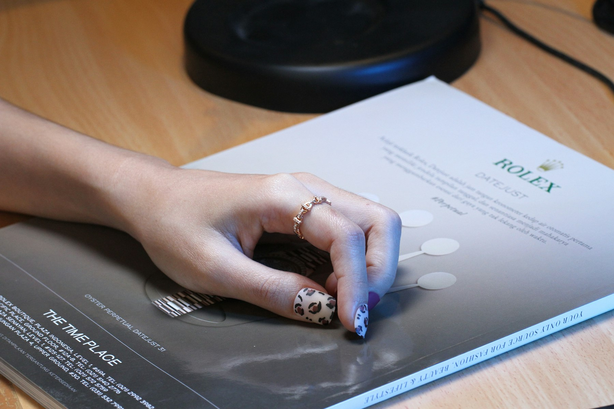

TL;DR
Reassess common side hustle myths: starting one requires more time and effort than expected. Aim for structured workflows with consistent reviews to ensure success, and consider your skills closely matched with market needs for effective partnership. Work towards realistic goals to sustain motivation.
Busy Professionals: Why You Need to Rethink Side Hustles

Many busy professionals believe that starting a side hustle is an easy path to extra income. However, the stark reality is that it often demands significant time and effort. For instance, while you might think you can simply dedicate a few hours on weekends to pursue a freelance graphic design project, the time involved in client communication, revisions, and project management can easily extend into your weekday evenings.
Furthermore, you might underestimate the energy needed to juggle a full-time job alongside additional responsibilities. This often leads to burnout or dropped commitments, straining both your primary job and side venture.
Why Many Side Hustles Fail: The Overlooked Costs
The allure of passive income through side hustles can be deceiving. Many individuals overlook hidden costs that come with these ventures. For example, suppose you invest $500 into crafting handmade jewelry to sell on Etsy.
Beyond just the upfront material costs, there are listing fees, shipping expenses, and time spent on marketing. Additionally, consider your time investment: if you initially planned to spend 5 hours a week, reality often has you putting in double that between customer service and production times.
Failing to account for these expenses can lead to a loss rather than an increase in income. Many side hustlers find themselves financially strained and less enthusiastic about their projects as a result.
Creating Effective Workflows: Time Management for Side Hustles
A successful side hustle thrives on an organized workflow, especially for busy professionals juggling multiple commitments. Utilizing the time-blocking method allows you to carve out dedicated time for your side projects without overlapping with your main job responsibilities. For example, you might block off Tuesday and Thursday evenings from 7 PM to 10 PM exclusively for your side hustle.
In addition to time blocking, leveraging productivity tools like Trello or Asana can significantly boost efficiency. Create boards to map out tasks, deadlines, and progress, ensuring that nothing slips through the cracks. For instance, if you’re launching an Etsy shop, list tasks like “design products,” “photograph items,” and “set up the store,” each with specific deadlines.
To maintain momentum, set SMART (Specific, Measurable, Achievable, Relevant, Time-bound) goals. A realistic short-term goal could be to create and list five new products each month. At the end of each month, dedicate an hour to review your sales data and assess which products are performing well. This reflection can help you pivot your strategy based on concrete results.
Consider, for instance, a software engineer named Sarah who spends her weekdays coding for a tech company. She allocates three evenings a week to develop her freelance programming services.
After three months of consistent time blocking, she reviews her productivity. While she initially aimed for ten clients, she discovered she could manage effectively with just five, allowing her more time for quality work and customer service.
By adjusting expectations and streamlining her processes, Sarah has not only maximized her earnings but also maintained balance with her primary job, proving that an effective workflow can lead to sustainable success.
Real Results: Investing Your Time Wisely
Let’s examine a scenario: If an individual dedicates 30 hours a month to freelance writing, charging $50 per article, the potential income can reach $1,500. Yet, it's crucial to evaluate not just potential earnings but the associated time commitment.
Initial months may yield less as you build your portfolio and client base. Many freelancers face this hurdle, taking up to 4 months to stabilize income. By the end of 6 months, however, that time invested can transition into recurring projects, amplifying your earnings with additional clients.
Making informed decisions on time allocation can significantly impact your income trajectory, illustrating that hard work initially translates into financial success downstream.
Common Pitfalls: Avoiding Traps in Your Side Hustle Journey
Many aspiring side hustlers fall prey to common mistakes that jeopardize their ventures. A frequent error is failing to conduct proper market research before diving in. For instance, creating a personal fitness app without validating demand may result in wasted development time and money, leaving one disheartened.
Moreover, setting unrealistic income goals can lead to disappointment and burnout. If you aim for $2,000 monthly revenue with a brand-new e-commerce store, consider that it may take several months to establish.
Recognizing these trade-offs is crucial. Instead, establish smaller milestones that provide achievable short-term rewards, maintaining motivation while building toward larger goals.
Next Steps: Selecting a Side Hustle That Fits Your Life
Identifying a side hustle that aligns with your current skills and lifestyle is vital. Start by performing a personal skills assessment—what do you excel at, and how can these skills be monetized?
Simultaneously, evaluate market demand. Sites like Google Trends can indicate hot sectors. For example, if you're skilled in digital marketing but notice interest in content creation is on the rise, consider starting a blog or offering social media management services.
This approach narrows your focus to realistic opportunities. By connecting personal strengths with market needs, you position yourself favorably for success in your side hustle endeavors.
FAQ
What are the best side hustles for full-time workers?
Some of the best side hustles include freelance writing, web development, consulting, and e-commerce—especially for those with specific skills. Options like online tutoring can fit varying schedules and requirements.
How much time should I dedicate to a side hustle?
Dedicating a minimum of 5-10 hours each week is advisable for meaningful progress in your side hustle, although setting aside more time initially may be necessary for building momentum.
This article has been reviewed for its practical usefulness and updated with relevant insights to ensure accuracy.
Next step
Use the article as a decision point, not just reading material. Your next system matters more than more browsing.
Search more articles
Find related tools, workflows, and guides.
Photo credits
- Photo 1: i am not cheerleader via Unsplash
- Photo 2: Kelly Sikkema via Unsplash
- Photo 3: Egor Myznik via Unsplash
- Photo 4: Sylvain Brison via Unsplash
- Photo 5: AGNES BARRAUD via Unsplash